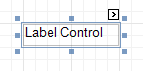

Label
The most basic Label control is intended to display text in your report. It can represent static or dynamic text, or both. In addition, it can be used to calculate standard summary functions across a data field. The Label's text can only be formatted as a whole. So, if it's required to differently format parts of text, use the Rich Text control.

After a Label is added to a report, you can customize its text, appearance and other properties, which can be accessed in the Property Grid. The most important properties are also available via a control's Smart Tag, which makes it easy to perform common operations. And, the Formatting Toolbar allows you to easily adjust a Label's text formatting.
In the Property Grid, the Label control's properties are divided into the following groups.
Appearance
Background Color
Specifies the background color for the control. This option is also available in the Formatting Toolbar (
 ).
).Borders, Border Color, Border Dash Style and Border Width
Specify border settings for the control.
Font
Specifies the font settings for the control. Some of these settings are available in the Formatting Toolbar.
Foreground Color
Specifies the text color for the control. This option is also available in the Formatting Toolbar (
 ).
).Formatting Rules
Invokes the Formatting Rules Editor, allowing you to choose which rules should be applied to the control during report generation, and define the precedence of the applied rules. To learn more on this, refer to Conditionally Change a Control's Appearance.
Padding
Specifies indent values which are used to render the contents of a Label.
Style Priority
Specifies the priority of various style elements (such as background color, border color, etc.). For more information on style inheritance, refer to Understanding Style Concepts.
Styles
Specifies odd and even styles for the control and enables you to assign an existing style to the control (or a newly created one). To learn more, see Understanding Style Concepts.
Text Alignment
Specifies the alignment of the control's text. This option is also available in the Formatting Toolbar.
Text Trimming
Specifies the string trimming mode of the control's text.
Behavior
Anchor Horizontally
Specifies the horizontal anchoring style of a Label, so that after page rendering it stays attached to the left control, right control, or both. This property defines how a report control is resized to maintain the distance to the left and right edges of its container control.
Anchor Vertically
Specifies the vertical anchoring style of a Label, so that after page rendering it stays attached to the top control, bottom control, or both. The property setting is useful for data-bound Labels located between upper and lower controls, which are allowed to resize depending on their contents.
Note that if the Anchor Vertically property is set to Bottom or Both, the Can Grow and Can Shrink property (see below) values are ignored, and don't participate in calculating a final height value of this control.
Angle
Specifies the rotation angle of the text. The measurement unit is a degree, and the orientation is counter-clockwise. Since standard HTML does not support text orientation, this parameter is ignored when a report is displayed within a web page.
Auto Width
Specifies whether or not a Label's width should be automatically determined based on its text.
Can Grow
When this property is set to Yes, a Label's height can be automatically increased, if required, to display the text. If there are other controls below the current Label, they will be pushed down to prevent them from overlapping. Note that if a control overlaps the growing Label by even one pixel, it will not be pushed down by the growing Label.
Can Publish
Specifies whether or not a report control is displayed in a printed or exported document.
Can Shrink
When this property is set to Yes, and the text does not completely fill a Label, then the Label's height will be decreased to the height of its text. If there are other controls below the current Label, they will be moved up to fill the gap. Note that if a control overlaps the shrinking Label by even one pixel, it will not be pushed up by the shrinking Label.
Edit Options
Provides access to options that define whether and how a control's content can be edited in Print Preview. For more information, see Enable Content Editing in Print Preview.
Keep Together
Specifies whether the contents of a Label can be horizontally split across pages. In other words, if a Label occupies more space than remains on the page, this property specifies whether this Label should be split between the current page and the next, or whether it will be printed entirely on the next page. This property is in effect only when a Label's content does not fit on the current page. If it does not fit on the next page either, then the Label will be split, irrespective of this property's value.
Multiline
When this property is set to Yes, a Label processes newline characters found in the text to start a new line. For example, when editing a Label's text, you can insert a new line by pressing ENTER, and in this case, the Multiline property will be automatically set to Yes.
Process Duplicates Mode
Determines the control's behavior when its data source contains consecutive repeating records. They can be processed as is (when the property is set to Leave), suppressed except for the first entry (Suppress) and suppressed with the blank space printed instead of the repeated records (Suppress and Shrink).
When the MergeByValue and MergeByTag settings are selected, the control processes duplicate values by merging the identical content into a single line of text.
Process Duplicates Target
Specifies whether to process duplicate values of the control's Text or Tag property.
Process Null Values
Determines whether to process Null (blank) values if they appear in the control's data source. They can be processed as is (when the property is set to Leave), suppressed (Suppress) and suppressed with the blank space printed instead of the blank records (Suppress and Shrink).
Scripts
This property contains events, which you can handle with the required scripts. For more information on scripting, refer to Handle Events via Scripts.
Visible
Specifies whether the control should be visible in print preview.
Word Wrap
When this property is set to Yes, text entered into the multiline Label is wrapped to the next line if it doesn't fit the line or comes across a newline character. If the this property is set to No, text entered into the multiline Label will be displayed on the same line until a newline character is entered.
Data
(Data Bindings)
If the current report is bound to data, this property allows you to bind some of the control's properties (Bookmark, Navigation URL, Tag and Text) to a data field obtained from the report's data source, and to apply a format string to it. For more information on this, refer to Displaying Values from a Database (Binding Report Elements to Data).
Lines
Provides access to the Text property of a Label in the Multiline mode.
Null Value Text
Specifies the text displayed by a control when the value of its bound data field is null.
Summary
Allows you to perform calculations (summary, max, min, average, etc.) over a data field. For more information on calculating summaries, refer to Add Totals to a Report.
Note
Summarization is possible for a single data column only. To perform calculations with several data fields, use calculated fields.
Tag
This property allows you to add some additional information to the control; for example its id, by which it can then be accessible via scripts.
If the current report has a data source, the Tag property can be bound to a data field obtained from the data source. To do this, expand the (Data Bindings) property and in the Tag.Binding drop-down selector, select the required data field.
Text
Allows you to define a line of static text to be displayed. To type several lines of text, click the control's Smart Tag, and in the invoked actions list, click Edit Text, or use the Lines property. Note that when a Label is selected in the designer, you may simply start typing the text, and it will be automatically entered into the in-place editor.

If the current report has a data source, the Text property can be bound to a data field obtained from the data source. To do this, expand the (Data Bindings) property and in the Text.Binding drop-down selector, select the required data field. For more information on this, refer to Displaying Values from a Database (Binding Report Elements to Data).
Xlsx Format String
Specifies the native XLSX format string for the control's content, which is to be preserved when the report is being exported to XLSX. This format string is independent from the general value formatting.
Design
(Name)
Determines a control's name, by which it can be accessed in the Report Explorer, Property Grid or via scripts.
Layout
Location
Specifies the control's location, measured in report units.
Size
Specifies the control's size, measured in report units.
Snap Line Margin
Specifies the margin (measured in report units), which is to be preserved around the control when it is aligned using Snap Lines, or when other controls are aligned next to it.
Navigation
Bookmark and Parent Bookmark
These properties are intended for the creation of a hierarchical structure within a report called a document map. For an explanation and help, refer to Add Bookmarks.
If the current report has a data source, the Bookmark property can be bound to a data field, obtained from the data source. To do this, expand the (Data Bindings) property, and in the Bookmark.Binding drop-down selector, select the required data field.
Navigation URL and Navigation Target
Use the Navigation URL property to specify a URL for web browser navigation, when a user clicks a Label. The web browser displays a page in a window or a frame as specified by the Navigation Target property. Note that a URL should have an appropriate prefix (e.g. "http://"). You can create cross-references within the report by assigning the name of the target control to the Navigation URL property, and setting the Navigation Target property to "_self". For more information, refer to Create Hyperlinks.
If the current report has a data source, the Navigation URL property can be bound to a data field obtained from the data source. To do this, expand the (Data Bindings) property, and in the Navigation URL.Binding drop-down selector, select the required data field.
Printing
Right to Left
Specifies the direction of text within a control. Use this option to correctly render text written in right-to-left languages.
By default, all report controls have this property set to Inherit, so enabling it for a report will apply this setting to all its controls.
The right-to-left layout is preserved when exporting a report to any of the supported formats (e.g., PDF, Excel, or RTF).